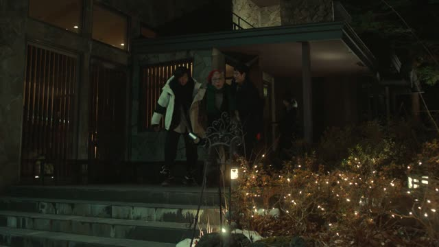
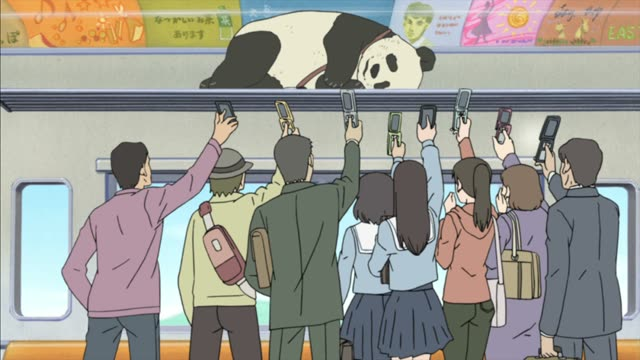
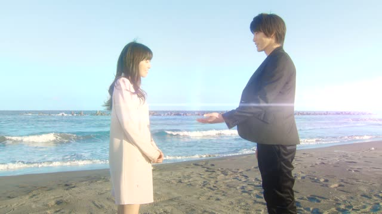
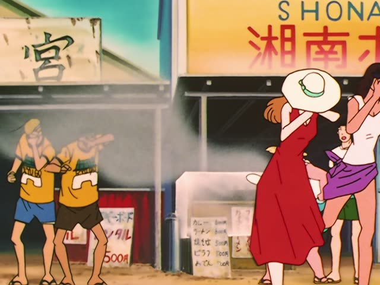
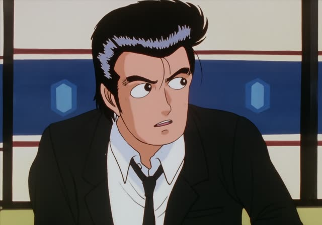
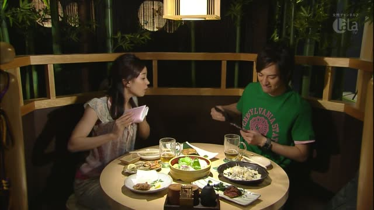
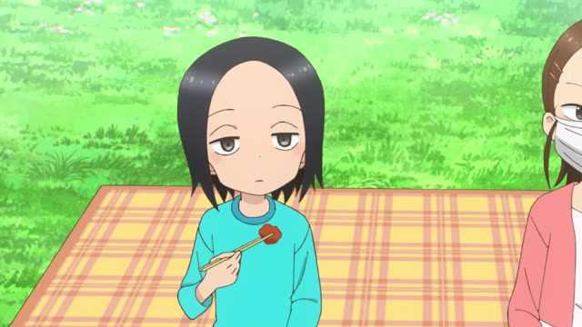
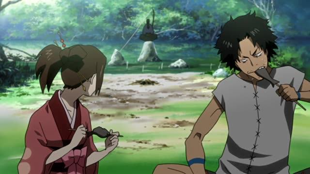

Volitional form

Quartet · Episode 1
帰る？帰ろう。
"Going home? Let's go home."
The volitional form is the casual "let's" or "I'll": 帰ろう, 食べよう. る-verbs: drop る, add よう. う-verbs: change the last sound to the お-sound and add う (帰る → 帰ろう, 行く → 行こう). する → しよう, 来る → 来よう.
On this card, Takita hears Beppu is heading home and invites himself along. 帰る？ is a question, 帰ろう is "let's go". Both are casual.
The polite version is ～ましょう (帰りましょう). That has its own page.

Shirokuma Cafe · Episode 49
ブログにアップしよう。
"I'll put it on my blog." [a panda sleeping on the luggage rack]
On this card, someone sees Panda asleep on a train rack and decides to post it. Said to yourself, the volitional means "I'll do it". する → しよう.
Quick Examples
Leaving a party with a friend.
そろそろ帰ろうか。
"Shall we head home?"
よう + か: shall we.
CasualTalking to yourself in the morning.
よし、今日も頑張ろう。
"Okay, let's do our best today too."
CasualYour friend is hungry.
ラーメン食べようよ。
"Let's eat ramen."
る-verb: 食べる → 食べよう.
CasualIt's raining.
今日は家にいよう。
"Let's stay home today."
CasualWith and without
行く。
"I'm going." A fact.
行こう。
"Let's go." An invitation or a decision.
Examples from Media
1 Litre of Tears · Episode 9
頑張ろう。
"I'll do my best."
Aya to herself on her first day at a new school.

Good Morning Call · Episode 9
行こうか。
"Shall we go?"
Dungeon Meshi · Episode 16
何か食べよう。
"Let's eat something."

Slam Dunk · Episode 92
あっち行こう。
"Let's go over there."

Oishinbo · Episode 12
俺が板前の代わりをやろう。
"I'll take the chef's place."
やる → やろう: "I'll do it".

Kekkon Dekinai Otoko · Episode 3
あっ、割り勘にしよう。
"Oh, let's split the bill."

Teasing Master Takagi-san · Season 2, Episode 3
サナエちゃんもやろうよ。
"Sanae, let's do it too!"

Samurai Champloo · Episode 15
こっちに来て一緒に食べようよ。
"Come over here and let's eat together."